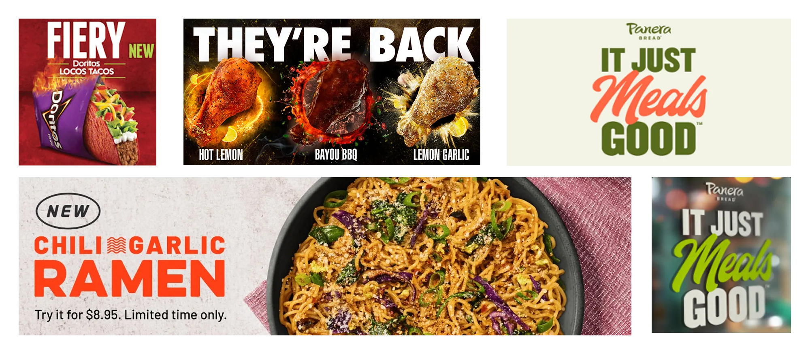
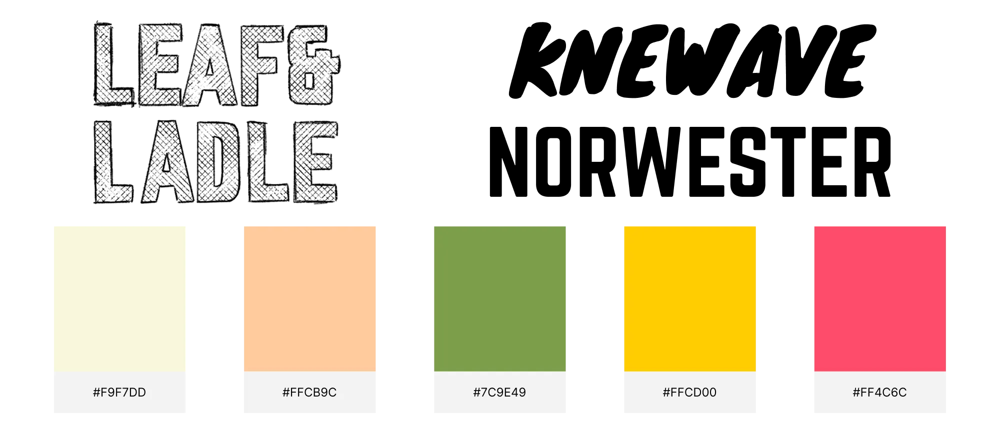
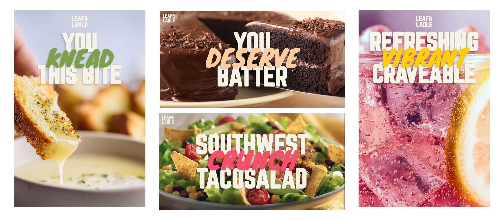

The inspiration for this project came while I was driving around town hungry, noticing how every restaurant sign and billboard captured my attention. In this project, the goal was to design restaurant ads that immediately captured attention, communicated their product, and triggered that instant craving the moment someone saw them.
Some restaurants that stood out to me were Panera Bread, Taco Bell, Wingstop, and Noodles & Co. Their advertisements all shared a similar approach: appetizing product photography, punchy typography, and highly-saturated colors. These were the key elements I wanted to integrate into my own restaurant posters.

I began by choosing a font pairing that delivered bold, punchy typography while standing out against the detailed product photos. Norwester provided a structured look without feeling blocky, while Knewave added a sketchy, energetic contrast that still remained bold. For colors, I started with soft earth tones like off-white and tan, then added three saturated accent colors for contrast.
My workflow involved creating three-line food-related messages and puns to overlay on detailed product photos. I used Norwester for most of the text, with Knewave and for accent colors highlighting key words.

The posters I created use bold typography, saturated accents, and high-quality, mouth-watering product photos to form a cohesive series while still highlighting each menu item's appeal. The designs are simple yet effective at conveying the energy, quality, and flavors of the Leaf&Ladle brand.
I believe these posters are brilliant and successful in advertising Leaf&Ladle's brand. The pun-based posters feel playful and inviting, making them ideal for large-scale billboards. The other posters show how Leaf&Ladle could advertise menu items on their website, in-store displays, or smaller promotional posters.